Financial Times · Oct 2026Russian ships fake locations to appear in two places at once
Report on a new AIS spoofing tactic in Russia's shadow fleet. Based on my finding that at least 12 sanctioned tankers broadcast identical frozen positions, some appearing in two places at once.
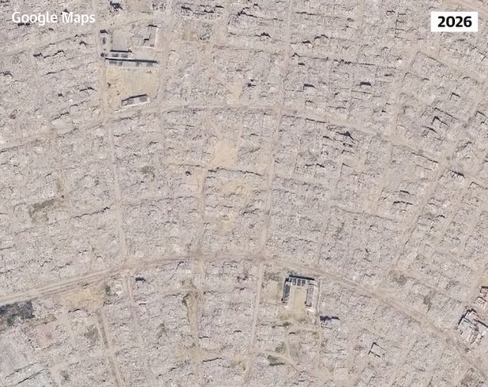
BBC World Service / Radio 5 Live · Sep 2026Google Maps update reveals the scale of destruction in Gaza
Interviewed on BBC World Service and BBC Radio 5 Live about the destruction in Gaza now visible to anyone through the update to Google Maps' basemap satellite imagery.
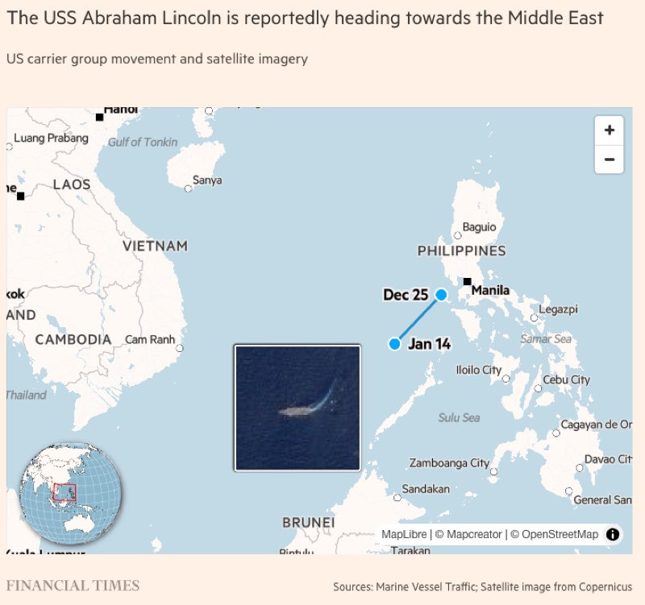
Financial Times · Jan 2026Middle East governments believe US-Iran tension has 'de-escalated'
Report on Gulf states urging Washington to hold off on strikes against Iran. Cites my satellite analysis showing the USS Abraham Lincoln carrier group heading toward the region.
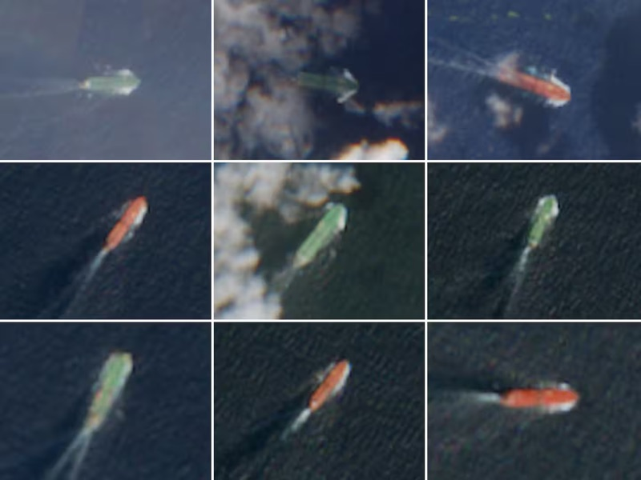
The Washington Post · Jan 202611 tankers under U.S. sanctions defy blockade in Venezuela, satellite imagery indicates
Investigation using Sentinel satellite imagery to show sanctioned tankers sailing beyond the U.S. blockade of Venezuela. My satellite analysis underpins the tanker detections.
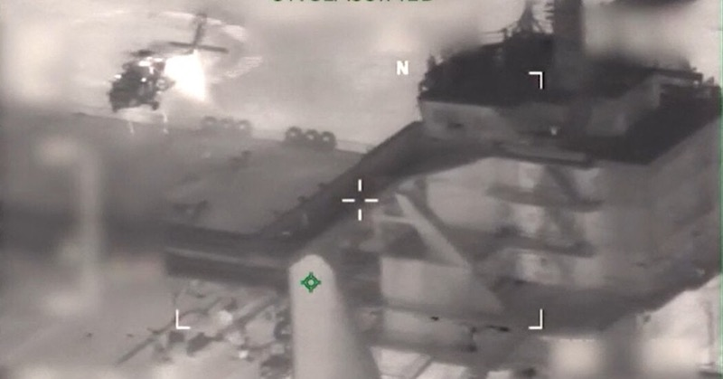
The New York Times · Jan 2026U.S. Navy Is Chasing Several Oil Tankers in the Atlantic
Report on sanctioned tankers fleeing the U.S. blockade of Venezuela, some reflagged as Russian. The Times tracked the vessels with me using my ship-detection program.
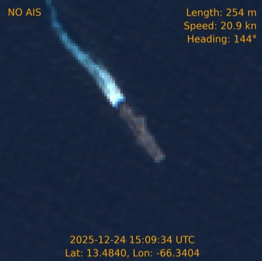
Financial Times · Dec 2025Satellite images track Donald Trump's squeeze on Venezuela
Satellite-based look at U.S. military deployments and oil-blockade pressure on Venezuela, drawing on my satellite vessel detections.
The New York Times · Nov 2025Tracking the US Navy in Venezuela
Using a model that I developed to search for specific vessels in satellite imagery, I was able to detect roughly 100 instances of US Navy ships operating in the Caribbean Sea near Venezuela over a two month period. I sent these detections to the New York Times, who verified the data and determined that the US presence is far more consistent with an invasion force than the stated counternarcotics mission.
BBC Verify · Nov 2025Israel has destroyed more than 1,500 buildings in Gaza since ceasefire
BBC Verify investigation into demolitions in Israeli-controlled areas of Gaza after the October 2025 ceasefire. The analysis used my pixel-wise t-test change detection method to flag destruction, which was then confirmed with high-resolution satellite imagery.
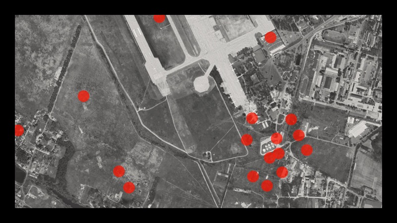
The Economist · Feb 2023Data from satellites reveal the vast extent of fighting in Ukraine
Interactive briefing marking a year of war in Ukraine, using fire data and radar imagery. Damage estimates, such as for Bakhmut, come from SAR analysis; I'm credited among the sources.
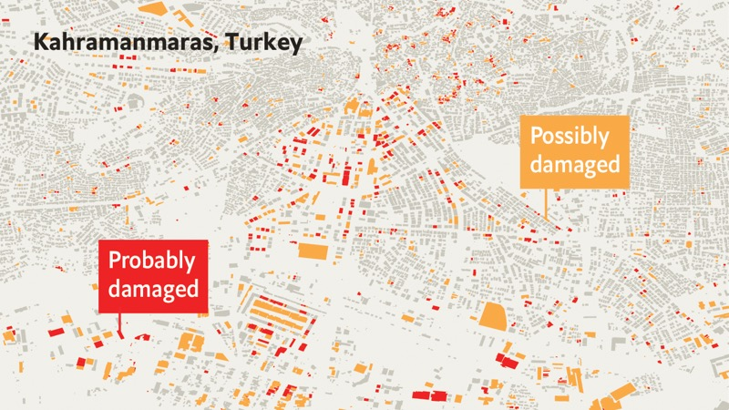
The Economist · Feb 2023Poor areas suffered 3.5 times more damage in Turkey's earthquake
Data analysis of building damage from the February 2023 Turkey earthquakes, linked to property prices. The Sentinel-1 damage estimates were produced by me at the Economist's request.
Sky News · Mar 2022Ukraine invasion: How satellites as small as a shoebox are giving the public eyes and ears on a conflict zone
Feature on commercial and open satellite imagery of the Ukraine war. Describes my Radar Interference Tracker and my use of it to detect a Russian exercise in Belarus before the invasion.
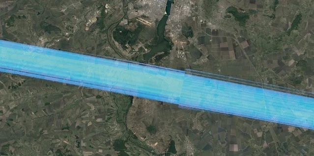
The Economist · Feb 2022A new era of transparent warfare beckons
Briefing on how commercial satellites and OSINT are making military build-ups visible ahead of Russia's invasion of Ukraine. Describes my Radar Interference Tracker, which picked up likely radar emissions from Russia's Pogonovo base; an image is credited to me.
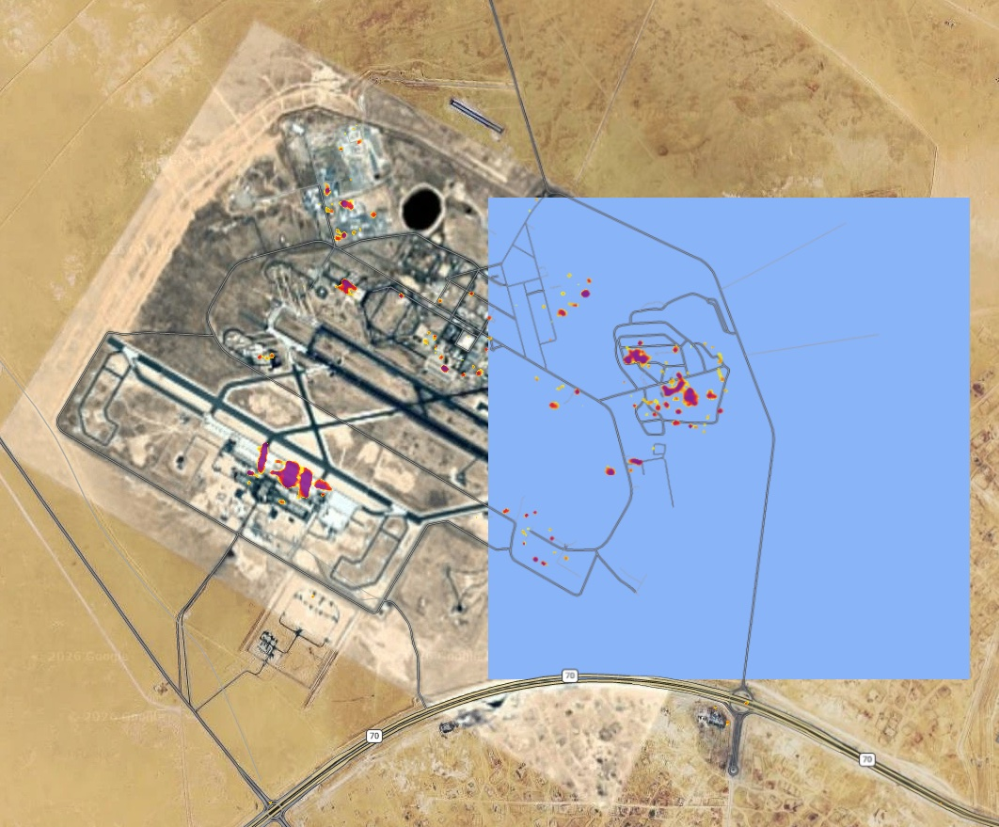
Iran Conflict Damage Proxy Map
With commercial satellite imagery restricted and Iran under an internet blackout, I built this tool for Bellingcat to map likely destruction across Iran and the Gulf, using my Pixel-Wise T-Test on free Sentinel-1 radar imagery.
Gaza Near Real-Time Damage Assessment
This project involves the analysis of satellite imagery to assess damage in Gaza in near real-time. Using a method I developed for building damage detection in radar satellite imagery, this tool allows users to get estimates of building damage on a monthly basis since the beginning of the genocide.
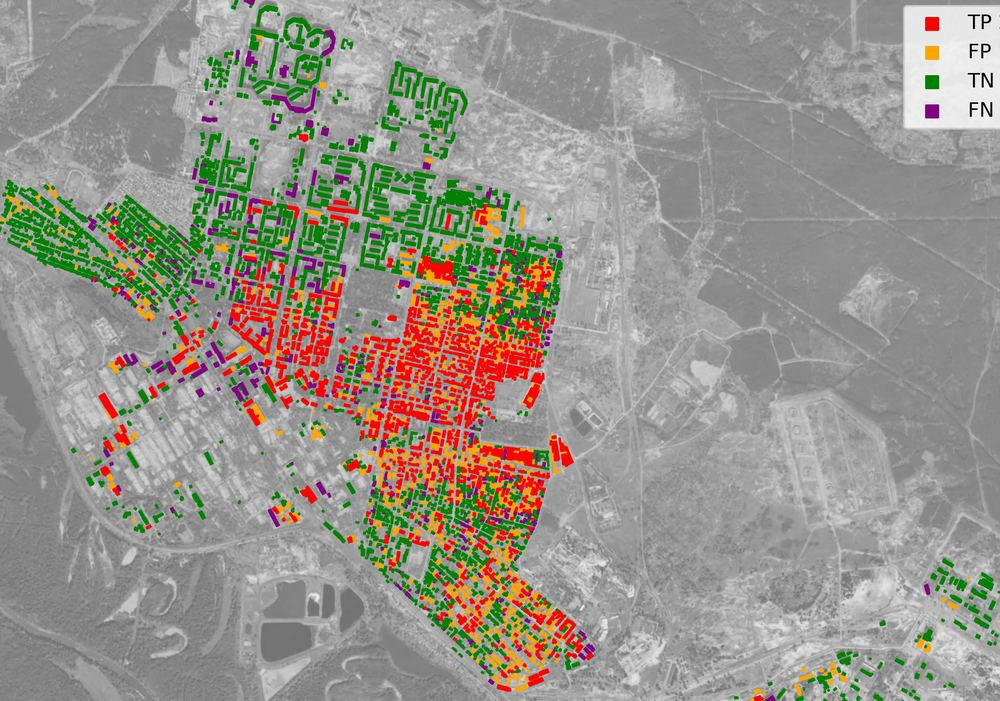
Open Access Battle Damage Detection
Published in Remote Sensing of Environment (2025). An open-source method that detects conflict damage to buildings from free Sentinel-1 radar imagery, validated on 2 million buildings across 30 cities. It powers near-real-time damage dashboards for Gaza and Ukraine.
Ship-to-Ship Transfer Detection
Presented at IGARSS 2024. I train a neural network to detect ship-to-ship transfers in satellite imagery and cross-reference them with vessel GPS data, identifying over 400 "dark" transfers in the Kerch Strait since 2022.
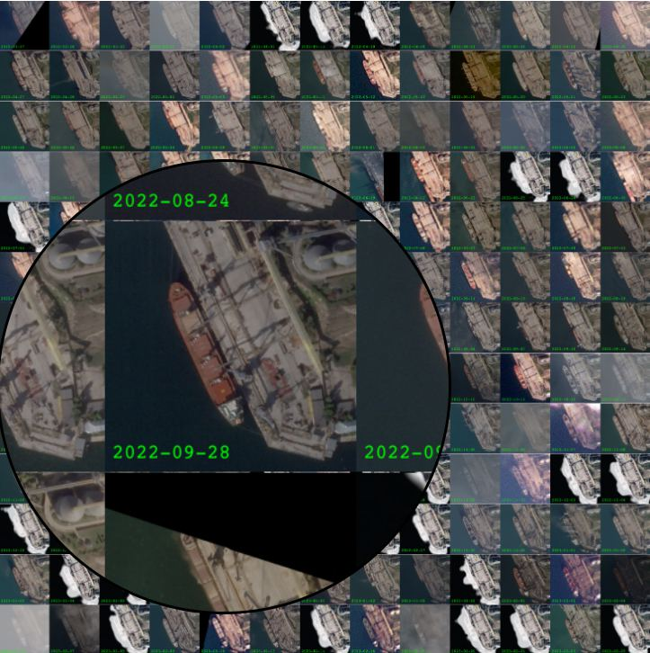
Tracking Russia's Ghost Ships with Satellite Imagery
Using optical and radar satellite imagery, we identified 180 ships with AIS turned off at the grain terminal at the occupied port of Sevastopol in the first year of the war.
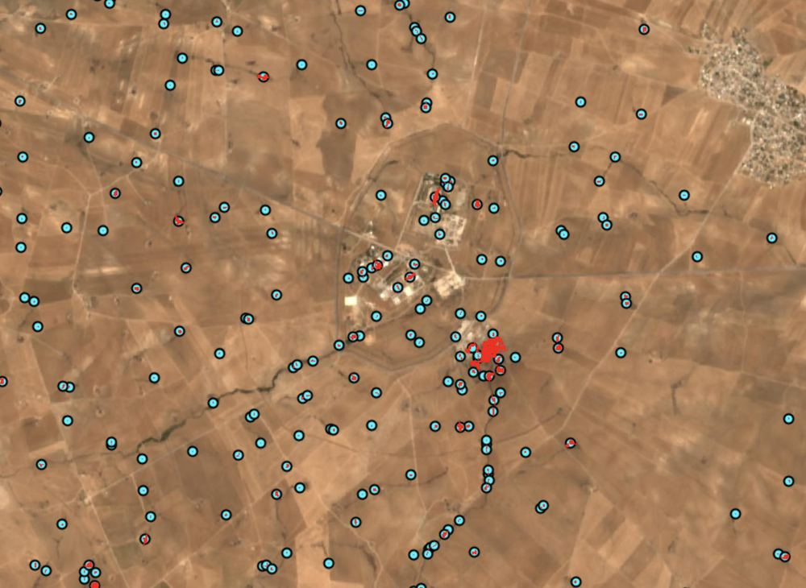
Syria Makeshift Refinery Detection
Published in the International Review of the Red Cross (2023), with Wim Zwijnenburg. How open-source investigation and satellite imagery can document conflict-linked environmental damage, from Syria's makeshift oil refineries to Ukraine, and strengthen accountability.
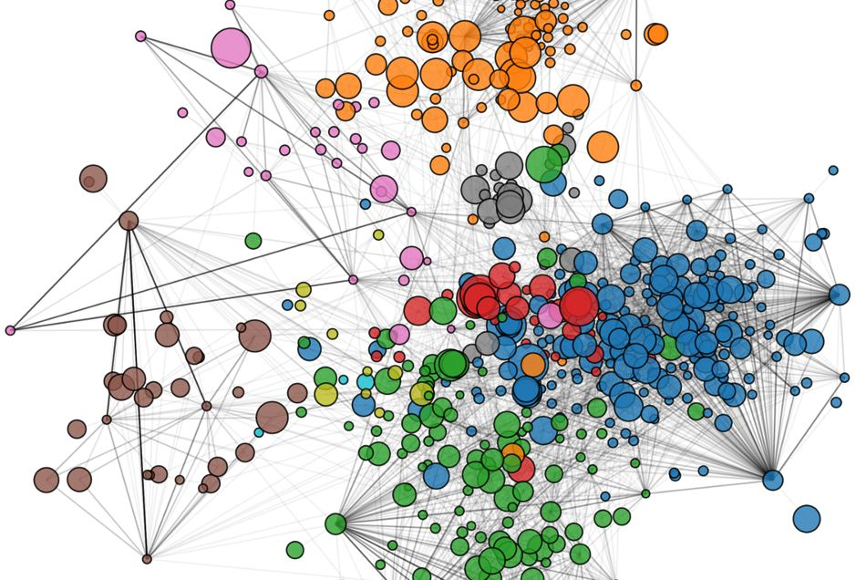
Network Analysis of Ship-to-Ship Transfers
Ship-to-Ship transfers can be modeled as a network where each ship is a node, and nodes are connected if they've conducted a transfer with each other. This enables the tracking of cargo across multiple transfers, and the identification of structurally important ships.
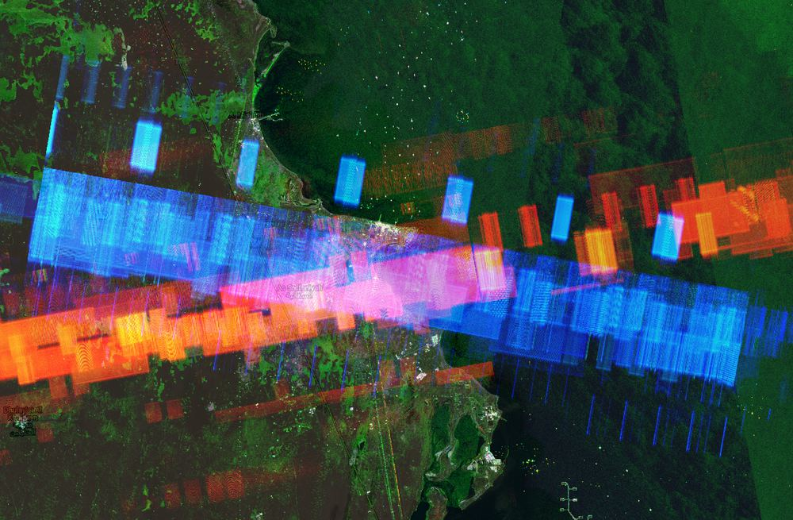
Radar Interference Tracker
Many missile defense radars interfere with open source satellite imagery when they're turned on. I built a tool for Bellingcat that lets anyone monitor when and where these radars are deployed. The tool has since been featured in the Economist, Sky News, Hackaday, and beyond.
Conflict and Pollution in Iraq
I co-wrote an article for Bellingcat which investigates conflict-related pollution in Iraq. I use remote sensing, machine learning, and geolocation to trace pollution back to facilities operated by multinational oil companies and map out the impacts on nearby communities.
3D Model of the Beirut Explosion
Following the 2020 Beirut explosion, blast damage assessment was carried out using two-dimensional satellite imagery which fails to capture damage done to the sides of buildings. I develop an alternative approach using Open Street Map data to create a 3D model of Beirut and the explosion to analyze directional blast damage.
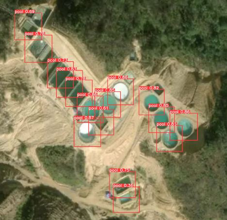
Identifying Unregulated Rare Earth Mines in Myanmar
Alan Turing Institute report (2023). As Principal Investigator for a joint Turing and Global Witness project, I trained computer vision models to identify illegal rare earth mining in rebel-held areas on the Myanmar-China border.
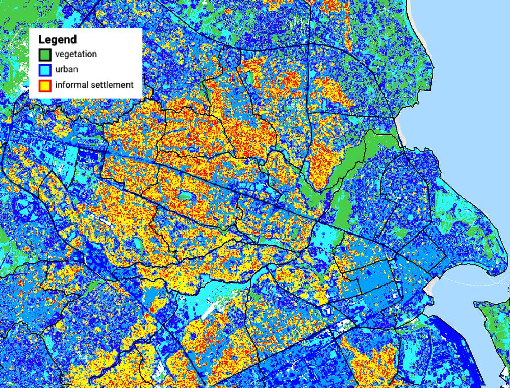
Informal Settlement Mapping
I built a prototype application for the U.N. World Food Programme that identifies informal settlements using a Random Forest algorithm and open source inputs (Sentinel-2 imagery and OSM footprints).
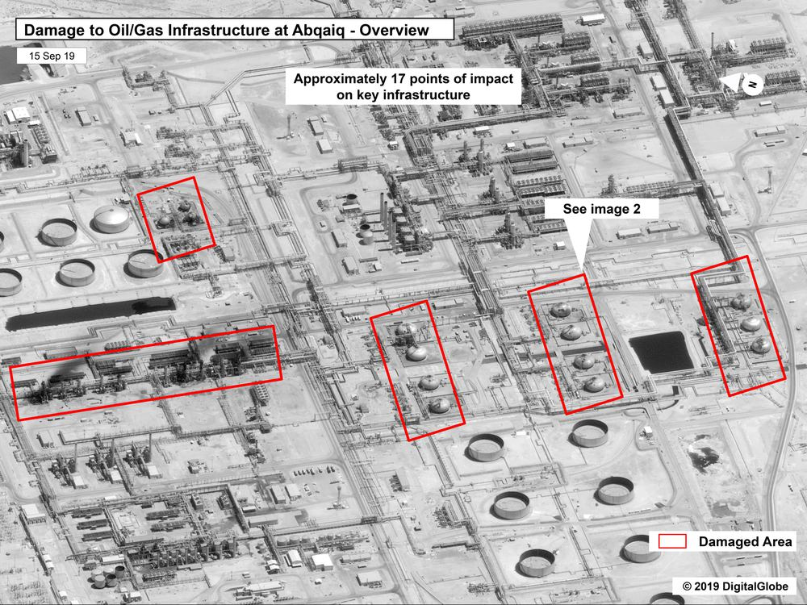
Saudi Missile Strike Investigation
In 2019, two Saudi Aramco facilities were hit by cruise missiles leading to the largest 1-day spike in the price of oil ever recorded. The expert consensus is that the attack succeeded because the Saudis were caught off guard. Open-source radar interference from Saudi air defenses may suggest otherwise.
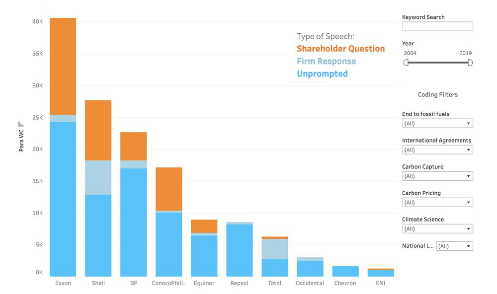
Shareholder Pressure on Oil Companies
Published in Review of International Political Economy (2021). Building on my analysis of 1,656 earnings calls, the paper finds that no oil major shifted away from fossil fuels between 2004 and 2019; the most ambitious were merely hedging.
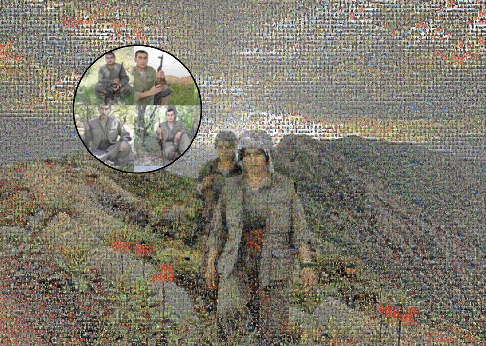
Militant Mosaic
This mosaic is composed of 20,000 images scraped from an insurgents group's obituary website.
Hasankeyf's Last Vote
Months before being flooded, 55% of a town that is currently underwater voted for the party that built the dam. What follows is a geospatial analysis of this historic event, and the strange political economy that led to it.
Fixing Election Maps with Streetlights
Rural counties take up lots of space on election maps despite being sparsely populated, creating significant visual bias. I develop a new approach to correcting this bias using nighttime satellite imagery. This post won the 2020 Mapbox Election Mapping Challenge
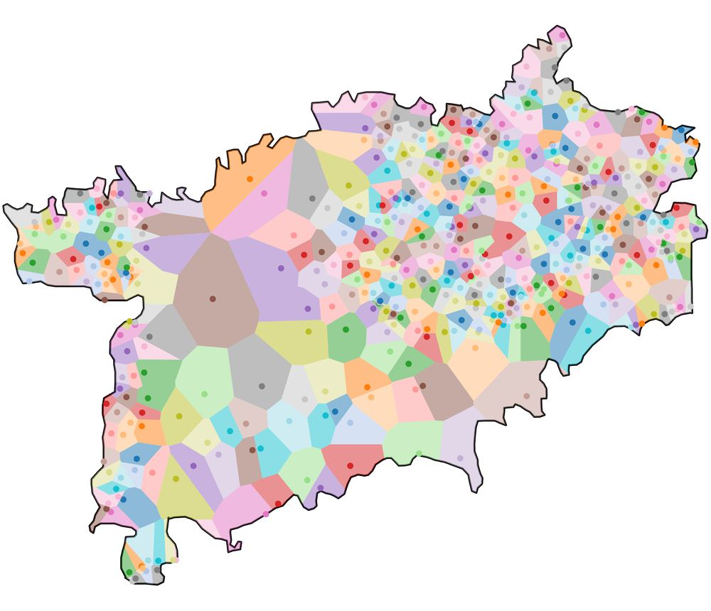
Village Voronoi Polygons
Using the latitude and longitude coordinates of human settlements in Pakistan, I create polygons that approximate the shape of villages using a Voronoi tesselation in Python.
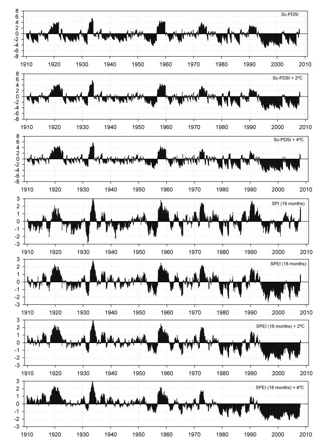
High Resolution Drought Index
This post outlines a workflow for the calculation of a high-resolution version of the Standardized Precipitation-Evapotranspiration Index (SPEI). This is accomplished in four steps, utilizing Python, R, and JavaScript.
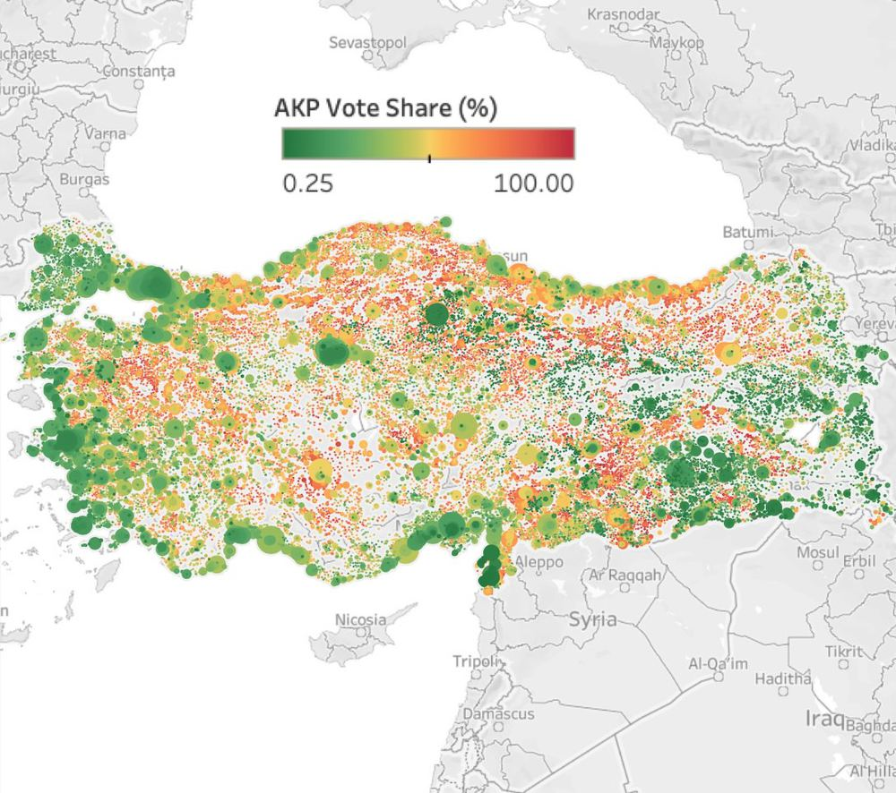
Turkish Elections Data
This tool visualizes 2,975,843 ballot-box level election results in Turkey spanning over 10 years and 20 elections. Data was acquired by scraping the Turkish Election Board's website using Selenium in Python.
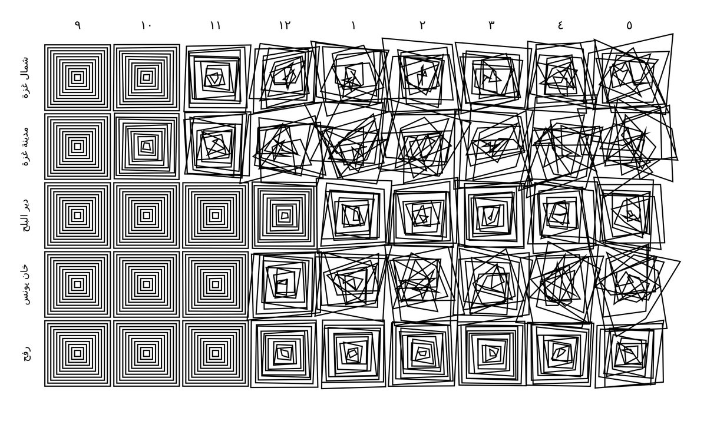
Nothing Beside Remains
Building damage across Gaza's five governorates, month by month, drawn as grids of concentric squares after Vera Molnár's Transformations (1976). The more damage my radar method measured, the more the squares jitter, from order into chaos.
Wibbler
A browser-based controller for laser cymatics. Stack oscillators, pick musical intervals and chords, and add LFO modulation or frequency sweeps, then watch the waveform, spectrum and Lissajous figures the sound draws.
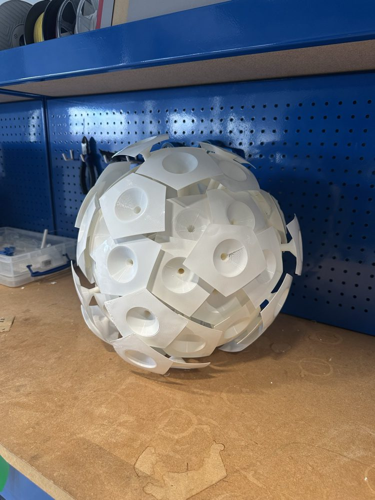
Staabi Lamp
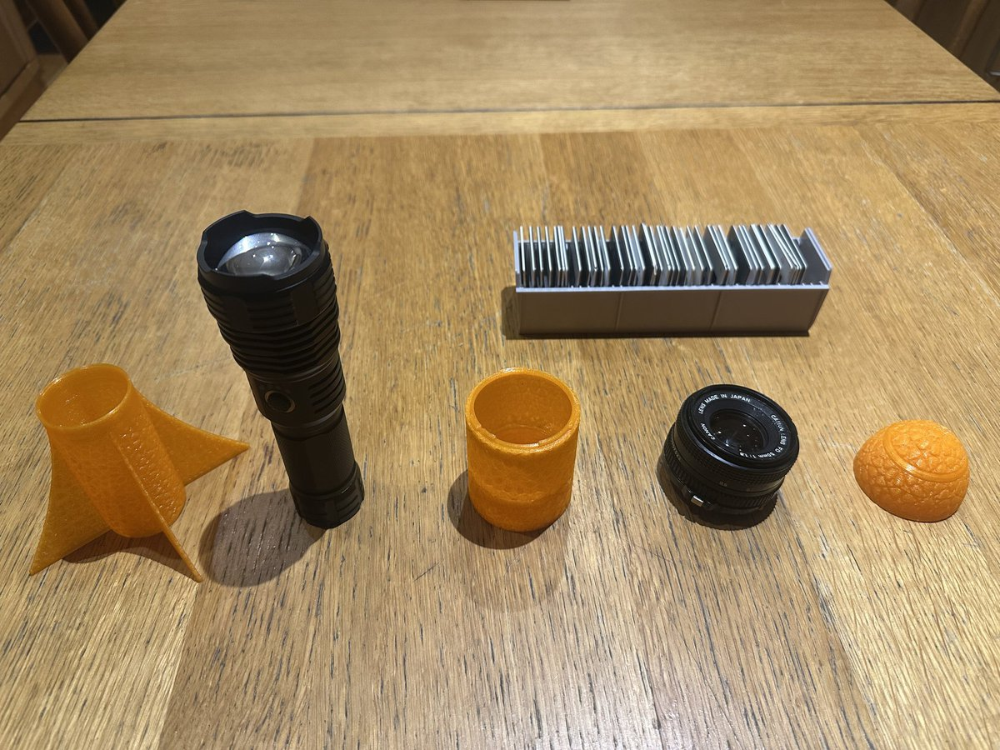
GB1-C Slide Projector
A slide projector built from a 3D printer, a cheap flashlight, and the lens from an old film camera (Canon FD 50mm).
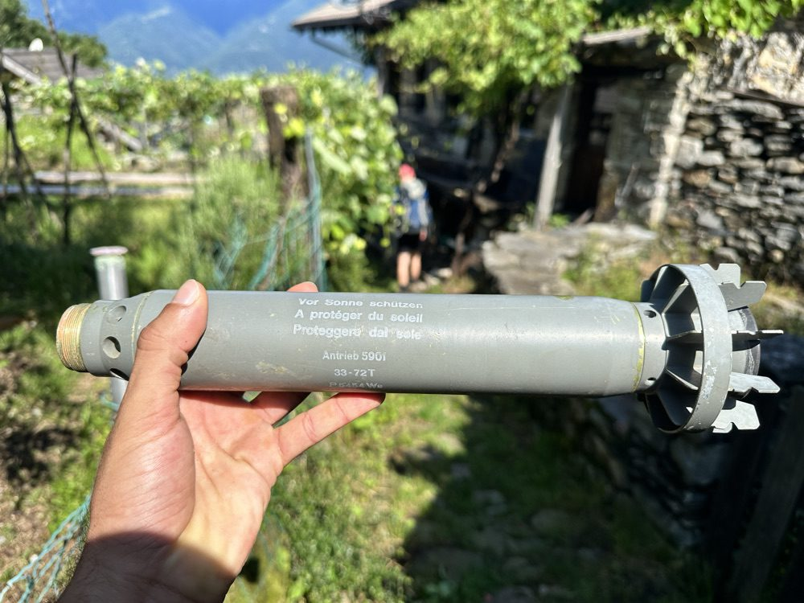
Anti-Tank Lamp
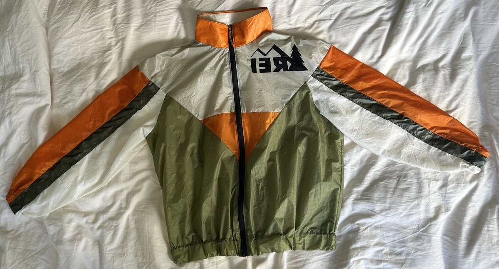
Tent Jacket
Made a jacket out of my old tent.
Nothing here yet — check back soon.